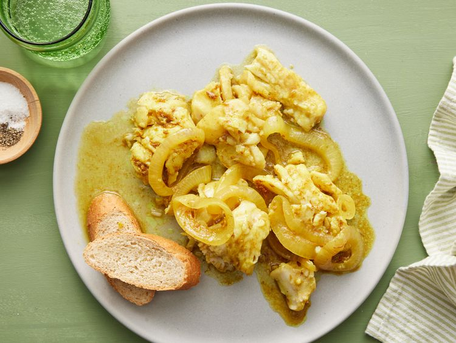

Cape Malay Pickled Fish
Home

Cape Malay Pickled Fish
Pickled fish made with cod and a delicious pickling mixture made with red wine vinegar, brown sugar, chili pepper, garlic, and lots of spices. This dish is traditionally served with hot cross buns or freshly baked bread for Easter in Cape Town, South Africa.
Ingredients
- 1/2 cup vegetable oil for frying
- 1,3Kg cod fillets, cut into 85g portions
- salt to taste
- 2 large onions, peeled and sliced into rings
- 2 cloves garlic, chopped
- 1 red chile pepper, seeded and sliced length wise
- 3 large bay leaves
- 8 whole black peppercorns
- 4 whole allspice berries
- 2 cups red wine vinegar
- 1/2 cup water
- 1/2 cup packed brown sugar or to taste
- 2 tablespoons curry powder
- 2 teaspoons ground cumin
- 2 teaspoons ground coriander
- 1 teaspoon ground tumeric
Directions
- Gather all ingredients.
- Heat oil in a large skillet over medium-high heat. Season fish with salt and fry in the hot skillet until fish is browned and flakes easily with a fork, about 5 minutes per side. Transfer to a plate.
- Add onions and garlic to the skillet and cook over medium heat until translucent, about 5 minutes. Add chile pepper, bay leaves, peppercorns, and allspice berries, then pour in vinegar and water and bring to a boil. Stir in brown sugar until dissolved. Season with curry powder, cumin, coriander, and turmeric. Taste and add brown sugar if desired.
- Arrange layers of fish and pickling mixture in a serving dish. Pour in pickling liquid to cover the top layer. Let cool to room temperature, about 30 minutes. Cover and refrigerate for at least 24 hours before serving.